In the last few sections you've
learned how to build more complex classes by extending
and combining classes from the Java and ACM class
libraries. That way, instead of constantly "reinventing the wheel",
you'll be able to build on the work of the programmers who've
gone before you.
In the last few sections you've
learned how to build more complex classes by extending
and combining classes from the Java and ACM class
libraries. That way, instead of constantly "reinventing the wheel",
you'll be able to build on the work of the programmers who've
gone before you.
Now, let's put that to work. In this section you'll learn:
- how to extend one of the existing ACM "shape" classes
so that it works in an ACM
GraphicsProgram. - how to extend the
java.awt.Componentclass to create a new widget that will work with Java graphical applications and applets.
In this section we'll create two different kinds of components; one will work with ACM graphics programs and one will work with Java applets. Both of them will use inheritance. In the next section, you'll learn how to create new components using composition.
PolarBounce II

Let's start this lesson by returning to the bouncing ball program, PolarBounce, from the Section 9.5—Introducing Animation. We'll write several different versions of the application, gradually turning it into an object-oriented program that applies the principle of inheritance and composition.
By writing several different versions, you'll come to appreciate how inheritance saves you work by letting you reuse existing, already-debugged code.
The original version of PolarBounce basically did three things:
- It defined instance variables to represent the ball and it's current state on the screen.
- It initialized each of the instance variables inside
the
init()method. - Inside the
advanceOneFrame()method, it moved theGOvalobject and then checked to see if the ball collided with the side of the canvas.
To represent the ball, the program used a GOval.
We're going to define our own classes instead, just like we did with
the AppletBounce programs of Chapter 12.
The GBall Class
 For our first sequel to PolarBounce, instead of using a
For our first sequel to PolarBounce, instead of using a
GOval and separate fields or local variables
for the attributes of our bouncing ball, we'll
create our own class to represent our ball, just like
we did with the SimpleBall class in
Section 12.1—Defining Fields.
Since you already know how to define a class, we won't go
through all of the different versions showing encapsulation
and constructors, like we did in those earlier lessons.
Instead, we'll
start with a class that has all of the features of the
ball we ended up with in that unit:
ConstructorBall. The big difference is
that our ball will work with the ACM graphics classes,
(so we'll name it GBall), and
instead of building it from scratch, we'll be
using inheritance.
The Class "Skeleton"
Create the GBall class exactly like you
create a regular Java class, except that
you should have it extend the
GOval class as shown here.
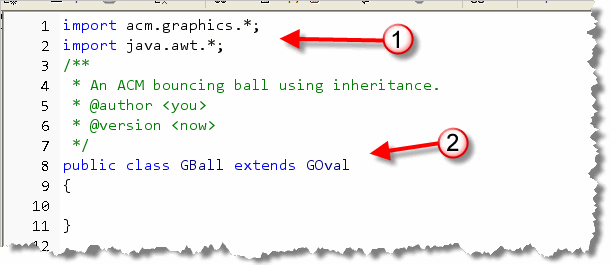
To make theGOval class available to the
compiler, you need to import the acm.graphics
package as I've done here. We'll also need the java.awt
package for things like the Color class.
You don't need the acm.program
package, though, because a GBall is not a
program; it's just a component.
In addition, you'll want to fill in the comment block as usual.
Why the Error?
Interestingly enough, this simplest possible code
doesn't actually compile. That's kind of surprising,
seeing that there's so little of it.
The error message in DrJava gives you a hint about what the
problem is:
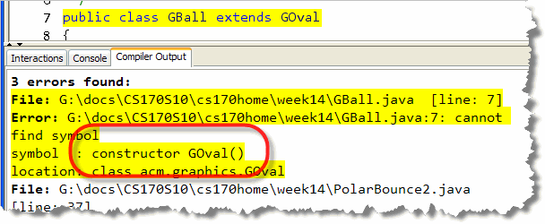
You'll recall from Section 13.2—Overriding Methods, that when you don't define a constructor, Java will "write" one for you. However, when you extend a class, the default (invisible) constructor that Java supplies, always calls the default (or the no-arg) superclass constructor automatically. What this error message is saying is that
the GOval class doesn't have a default or no-arg
constructor. That means:
- we must write a constructor in the
GOvalclass; the default constructor cannot be made to work at all. - our constructor must explicitly invoke one of the
GOvalconstructors.
So, let's decide on what data attributes we need and then write a working constructor to satisfy the compiler. Instead of working from instance variables to constructor, like we did earlier, this time we'll work from the constructor backwards.
The Working Constructor
For our working constructor we want to supply three parameters:
- a
doublefor the ball's radius - a
Pointfor the ball's location - a
Colorfor the ball's filled color
These are the same three parameters we used for the
ConstructorBall working constructor in
Section 12.4—Constructors.
Here's what a first draft of that looks like:
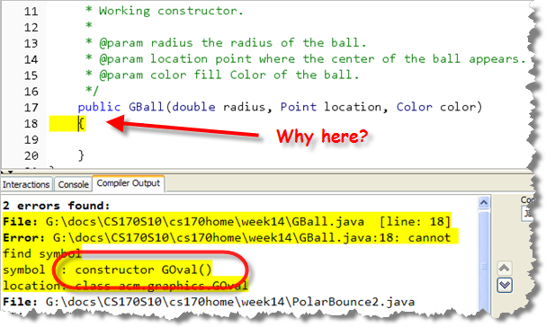
Strangely enough, we still have exactly the same error, except that it seems to have moved to a different location. What's up with that? The problem is, our code is still trying to call the
no-argument constructor in the GOval class, and the
GOval class doesn't have one of those.
To fix the original (and remaining) error, we need to
explicitly invoke a different
superclass (GOval) constructor on the first line
of our GBall constructor. You specify which
constructor to invoke by passing the appropriate parameters:
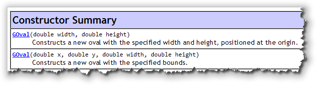
From the documentation, I can see that there are twoGOval
constructors to choose from. Neither of them exactly matches my
parameters (since I want the location parameter to
represent the center of the ball), but we can manipulate
those parameters like this, passing the GOval constructor
the values that it expects: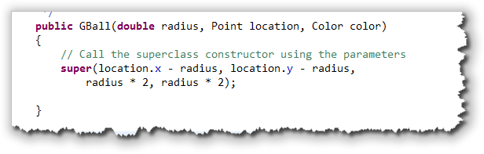
Notice that:- the first two parameters expected by the
GOvalconstructor are the x,y coordinates of the upper-left corner of the object's bounding box. In our case, though,locationrepresents the center of the circle. Thus, to satisfyGOvalthe constructor subtractsradiusfrom thexandyfields of thelocationparameter. - the last two parameters to the
GOvalconstructor arewidthandheight. Since we're creating a perfectly round ball, we just multiplyradius * 2for both parameters.
Notice also, that instead of using the name GOval to
call the superclass constructor, you just use the name
super instead.
Instance Variables
The ConstructorBall class (from Section
12.4—Constructors)
had five instance variables:
radius, location, color,
dx and dy. Because our GBall
already contains a set of instance variables (which it inherited
from GOval), we don't need all of those variables.
In fact, all we need are the variables that track the ball's movement.
In ConstructorBall those were dx and
dy, but the PolarBounce program used
direction and distance instead. Let's
use the two variables from PolarBounce like this:
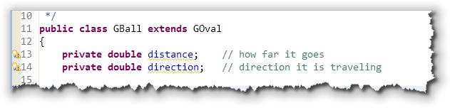
Once we've done that, we can finish the working constructor by making sure all of the attributes (whether represented by instance variables or inherited variables) are initialized. Here's the finishedGBall working constructor: Notice that we need to use the
Notice that we need to use the setFillColor() and setFilled()
methods to initialize the ball's color. The direction and
distance are each set to a random value, appropriate for
the meaning of the field.
Moving the Ball
To move the ball, we'll need to add a move() method, just
like we did previously. Since GBall inherits the
movePolar() method from GOval, we could use
the GBall in the same way that the GOval
was used inside the PolarBounce app.
Instead though, we want to have the ball "bounce itself" by
adding a move() method. Since the move()
method needs to "know" when it's collided with an edge of the
canvas, we'll pass a GCanvas object as a parameter
like this:
 Inside the
Inside the move() method, our ball uses the inherited
movePolar() method to adjust its location.
Of course, without any other changes, the ball will continue in the
same direction for infinity. So, just as we did before, after each
move we need to check to make sure that we're still on the playing
field, and, if not, adjust the direction appropriately
like this:

Trying it Out
To try it out, I've written an application,
PolarBounce2.java, which you'll find in this chapter's
code folder. The program creates an array of GBall
objects and starts them all bouncing at once. Just open
it up in DrJava, compile and run:
 Let's look at how the
program works.
Let's look at how the
program works.
Here's the code from PolarBounce2 that creates each of
the GBalls in the array named bouncers:
 The three methods used when constructing the
The three methods used when constructing the GBall
objects—randSize(), randPos(), and
randColor()—are private helper methods
defined in the PolarBounce2 class to make the
code a little simpler.
To move the balls around, you can use the "new style" for
loop to retrieve every element in the bouncers array
and call its move() method like this:
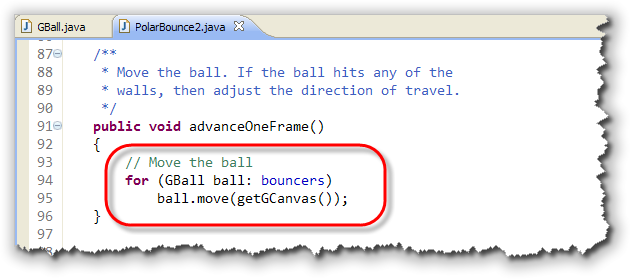
Since eachGBall in the array is created with a
separate random color, location and trajectory, they all bounce
at different speeds, as you can see when you run it.
Inheritance and the Widget Classes
While the GBall class fits into the ACM graphics
family, how would we create a class that works with Java's
component hierarchy? Let's create a second class using
inheritance that works with Java's built-in buttons and labels.
The class that we'll create, the Dot will inherit
all of the methods and fields from the java.awt.Component
class, so it will work with other AWT and JFC components.
As always, you'll learn more if you break out the keyboard and
compiler, and type along.
Canvas and Component
For this project, you're going to be creating two new classes.
- One class,
TestDotswill extend theAppletclass. You'll use this class as a "test-bed" or "test-harness" for your new widget class. - Your second class,
Dot, will extend one of the built-in classes, the class namedComponent.
When you extend the Component class to create
"lightweight" components, your components can contain
transparent regions, so you can create round or irregularly
shaped components. Our Dot objects will be circular,
so the Component class is just what we need.
Step 1: The Test Harness
Start up your DrJava, and create a new Java class. Whenever I have to create a new "standalone" class, I always create a test-harness first. We'll follow that here. Instead of starting with the Dot class, we'll create a program that uses the Dot class.
Use java.applet.Applet as the base class, and
then use the code shown here:
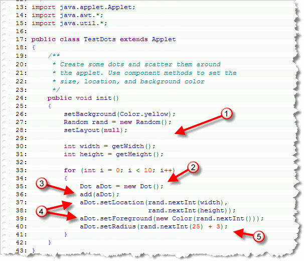
Notice that this is a simple applet that works like this:-
To start out, I've set the background to yellow, and the
layout manager to null. This will make it easier to check our
sizing, positioning, and painting methods, when create the
Dotclass. I've also created a random number generator, and two local variables,widthandheightthat I'll use to position each of myDotobjects, later in the program. - The loop at the end of the
init()method repeats ten times, and each time through, it creates aDotobject, using the default constructor. - Because our
Dotis-aComponentobject, we can use theComponentclassadd()method to add eachDotto the applet. - Because every
Dotis-aComponent, we can also use the inheritedsetLocation()andsetForeground()methods, with out doing any extra work in theDotclass. Like all inherited methods, we get the extra functionality, "for free". - Finally, we can add new functionality. The
Componentclass knows nothing about a radius, but we'll give ourDotclass a specializedsetRadius()method, which we'll call from line 40.
Now, because the Dot class does not yet exist,
your code
will not compile at this point.
Step 2: The Dot Class
Now, create a new Java class called Dot.java, and add the new class definition shown here:
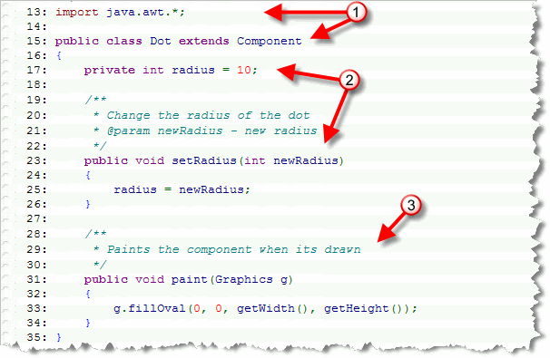
Note the following things about this code:- We only import
java.awtnotjava.appletlike we've done for our applets. The new class then extendsComponent, notApplet - There is an instance variable,
radius, which we set to a default value of 10. We also added a mutator method,setRadius(), which allows us to change the value of the radius. - Finally, there is a
paint()method, just like those you've used in your applets, that draws the bounds of the dot, based on its size.

Compile and Run
Once you've completed this second file, save both TestDots.java and Dots.java. Both files should compile without problems, and then run TestDots as an applet.
What do you see?
Why, do you suppose your Dots are invisible????
The Dot class is fairly Spartan; it
doesn't look like there's a lot of room for something to
go wrong, but even the simple paint() method doesn't
appear to be working.
Note, though, that even though your
dots appear "invisible", the Dot class actually
"knows" how to do quite a few things, despite the inauspicious
start. Notice that you didn't get any error messages with
the add(), setLocation, or
setForeground() messages.
Let's tackle the "invisibility" problem first.
How Big is that Dot?
Even though we set the radius of each of our Dot objects,
we really haven't considered how our Dot class "fits in"
with all of the other components. When you extend a class, you need
to carefully examine each of your ancestor classes and see how your
new fields and methods affect them.
In this case, the problem is quite simple; we're changing our Dot's
radius, be we aren't passing that information on to the rest of
the family. We can fix that by calling the inherited setSize()
and setPreferredSize() methods whenever we change our
object's radius.
Here's the modified setRadius() method:
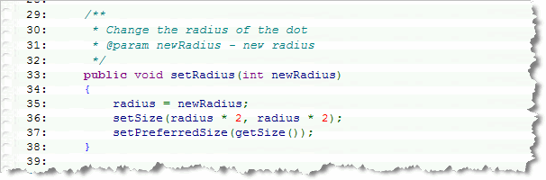
and here's a constructor, which makes sure our objects start out life with the correct size as well. In addition, I've set the default foreground and background color of eachDot also.
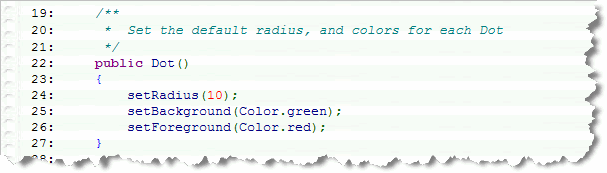
After you've made these changes, run TestDots again, and
you'll see that this time, the dots are spread out
across your applet, just like the picture shown
below:

Lessons Learned
There are three lessons we can draw from this program:
- We can create
Dotvariables and objects just like we can createJLabelorJButtonvariables and objects:JLabel myLabel = new JLabel("Hi Mom"); // OK
To add more functionality, we could add more constructors or methods.
Dot aDot = new Dot(); // also OK - A
Dotobject is-aComponent, just like the built-in components that come with the Java Class Libraries. We can add them to the surface of our applets just like we can addJButtonorJLabelobjects:this.add(myLabel);
this.add(aDot); - We can automatically use the
Componentmethods,setForeground()andsetLocation()without doing any extra work at all. TheDotclass inherits them "for free."myLabel.setBackground(Color.red);
aDot.setBackground(Color.red);
Of course, unlike JButton objects,
the Dot is a pretty poor Widget. Sure, we can change
its size and color, but, like the Label class, it more or
less just sits there. In the next chapter, you'll learn how to
make it respond to events.
In Summary ...
In this section you put your knowledge of inheritance to work
and created new components that work with the ACM
graphics framework and with the Java Class Libraries.
You extended the GOval class to create
a GBall and extended the Component
class to create a Dot.